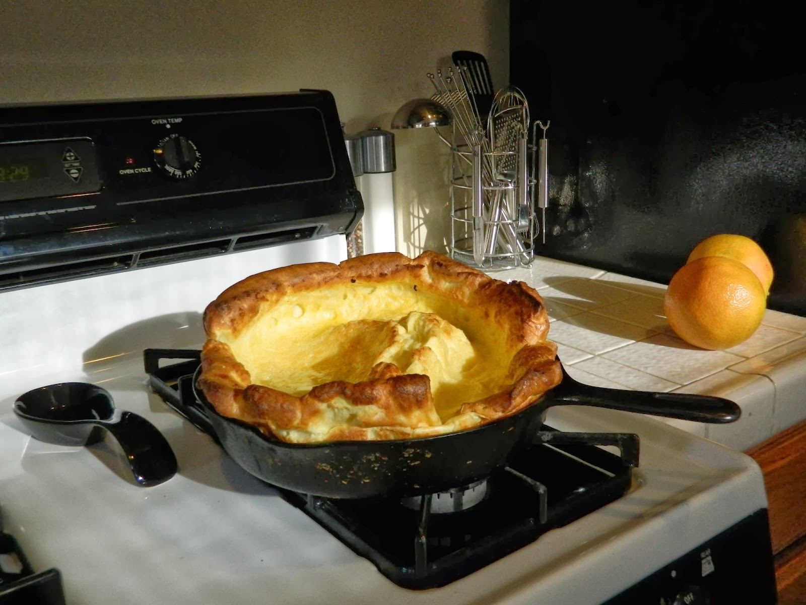

Dutch Baby

About the Dish
The Dutch baby is a pancake baked in the oven that originated in the US in the early 1900s. I like mine sweet, with some powdered sugar and strawberries.
The recipe source: once upon a chef.
Ingredients
- 3 large eggs
- 1/2 cup of all-purpose flour
- 1/2 cup of milk
- 1 tbsp of maple syrup
- 1/4 tsp of salt
- 1/2 tsp of vanilla extract
- 3 tb of unsalted butter
- powdered sugar (optional)
- strawberries (optional)
Instructions
- Preheat oven to 400°F & set an oven rack.
- Insert a 10-inch cast iron skillet into the oven and heat for at least 5 minutes.
- Combine eggs, flour, milk, maple syrup, salt, and the vanilla extract in a blender. Blend until smooth (~30 seconds). This is the batter.
- Put butter on preheated skillet. Close the oven and allow the butter to melt (~2 minutes).
- Remove hot skillet from oven.
- Pour the batter into the skillet and place skillet back into the oven.
- Bake for ~20 minutes, until puffed and golden.
- Remove skillet from oven. Dust with powdered sugar and top with strawberries.